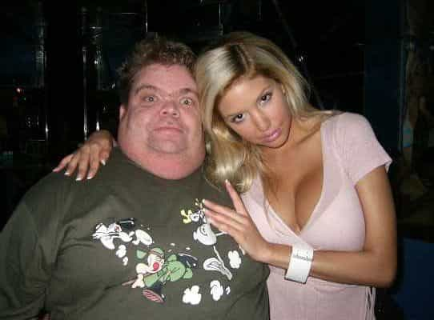

Troy is a game veteran of a decade's standing, and a lover of women, literature, travel and freedom. He is also the author of The Seven Laws of Seduction. Visit his website at Troy Francis.


As the ‘how to date women successfully’ niche matures, its best known exponents are subject to constant scrutiny and—in some cases—ridicule online. This is fair enough. If you are going to put yourself out there as an ‘expert’ then you should expect attention, and that not all of it positive. But the more negative elements of the commeteriat are, by creating a false narrative around the efficacy of game, inflicting real damage on those men they would claim to represent. If you are truly interested in improving not just your prospects with women, but also your growth as a man, then you should view such voices with skepticism.
I have been interested in game since 2005 (and even before then, when it was less established). In that time I have seen pretty much every prominent pick-up guru ripped to shreds. ‘Him? His lay count is only 50 – what does he know?‘; ‘He’s far too ugly to be getting the girls he says he does‘; ‘His advice is worthless – he’s good-looking and that’s the only reason he gets girls‘; ‘He has no infield videos showing his game in action‘; ‘He has infields but they’re probably faked‘. He’s too fat, he’s too thin, he looks like a ‘roid addict, he’s not built enough.
And so on, ad infinitum.
Scepticism is natural, and healthy. We shouldn’t take everything we are presented with at face value, particularly online, where it’s easy for people to fabricate things. But what concerns me about a lot of the game-denialist arguments I hear is that they are based in ad hominem and lack intellectual rigour.
To put it another way, the snowflakes who say game doesn’t work spend a lot of time shooting the messengers, and very little time responding to specific aspects of their content.
When it comes down to it, the game denialist position is extremely simple, and not very helpful. It is as follows: ‘girls are only interested in looks, height, money and fame.’
The denialists, like flat-earthers, hold this doctrine to be so self-evidently true that they feel that they don’t need to engage in coherent intellectual discussion with anyone who disagrees. Name-throwing and slurs are sufficient. Thus, any man who is not cute enough for them is dismissed as a fantasist, while his ideas go unchallenged. Men who do meet the denialists’ aesthetic criteria are grudgingly given the benefit of the doubt, but their counsel is deemed worthless for any man without the same physical advantages. References to ‘Chad Thundercock’, a popular mastubatory fantasy figure for incels, are common.
In forums, comments section of YouTube videos, Facebook groups or Twitter threads, the denialists find many willing cheerleaders. Their contributions are upvoted enthusiastically, which doubtless gives them the dopamine hit that motivated them to post in the first place.
And I get it: I understand both why these people make these comments and why people applaud them. Simply, it is because negativity is intoxicating, and it is easy. It is far more straightforward to denigrate someone online than to engage seriously with their ideas, or even worse, to actually take steps to change one’s own life. Throwing shade is a comfort blanket. Like a McDonald’s meal or a KFC bucket, it’s an easy way to feel good temporarily.
The problem, though, is that these denialists are wrong. They are propagating a self-evidently false narrative. They may have given up on self-improvement themselves, and that is their right, but to feed other men with this nonsense is irresponsible at best, and deliberate sabotage at worst. ‘If I can’t get laid,’ they are saying, ‘I don’t want anyone else to either. Except Justin Bieber, because he’s rich and cute‘.
When I look around the city where I live, and the other cities that I visit regularly for work, I constantly see what you might call ‘low value’ men who are not good looking or rich with wives and girlfriends. Sometimes the women they are with are extremely attractive. The game denialist argument that ‘average’ men can’t get sex is demonstrably false. Were that the case we would be seeing global population collapse, rather than overpopulation.
The question that remains, though, is can average men learn (through game) to get younger, hotter girls interested in them for sex? The answer is yes. If you learn certain basic fundamentals of male-female dynamics and improve your social skills, along with your grooming, dress sense and so on, and if you go out there with determination and persistence, then you will attract more sexier women. This is not rocket science. It doesn’t mean you will be getting Victoria’s Secret models. No one ever claimed that. But you will be getting a better deal than you would have done otherwise.
The game denialists would have us believe that this is impossible. Their position, essentially, is that you are born with a score, and that score not only determines your sexual success for the rest of your life, but it is also utterly unalterable. So, if you are a male 4 you will never be able to attract anything more than a female 4, and actually you are more likely to end up with a 3 or a 2.

I fundamentally contest this position quite simply because it goes against everything I have seen in my own life and that I observe around me every day. But say for a moment they are right. Say the playing field is rigged, and if you haven’t got ‘it’ then you are doomed to a low-value life.
Are we as men supposed to just roll over and accept that?
For me, the very essence of masculinity is the drive, persistence and determination to change our personal circumstances, be that through meeting hotter girls, growing a bigger income, getting better at a skill or sport, or defeating rivals in business. The warrior spirit that defines maleness is lacking in these snowflakes who would rather not believe, less still test the hypothesis, that it is possible to transcend one’s status in the genetic pecking order.
One of the main reasons that I personally have been successful in game over the years, as well as in other areas, is a sheer defiance: an unwillingness to accept the status quo. And grit, after all, is one of the key determinants of success and a hallmark of high-achievers. I wouldn’t have it any other way.
In the end, independent thinking—another key component of masculinity—is essential. When I read the advice of a pickup expert (or a financial or business expert, for that matter) I don’t waste time or energy bitching about the person who delivered it. Instead, I go out and test their ideas. Because that, after all, is what is important. If their suggestions work then great. If they don’t then I discard them. I want a better life, and I evaluate people’s’ ideas on their own merits rather than against a backdrop of my own prejudices.
I also recognise that a big part of having a better life is to help others. And it is for that reason that I would never impede the progress of other men by promulgating limiting beliefs based on my own insecurities rather than my field-tested experience.
Want to find out how jerks and bad boys get the hottest girls? Click on the link now to read Troy’s latest book How To Be An Asshole
Read More: Indirect Vs. Direct Game: Which Is Really Better When You Approach A Beautiful Girl?